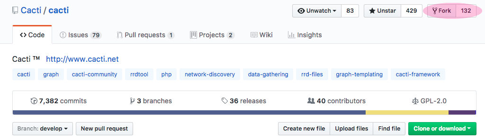
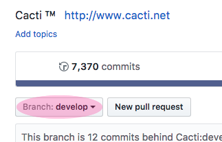
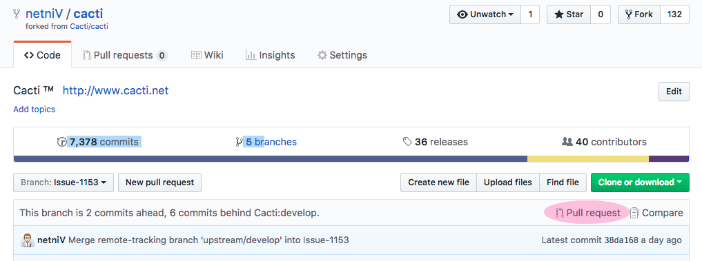
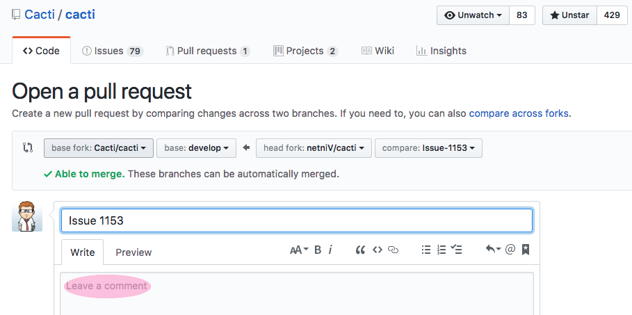
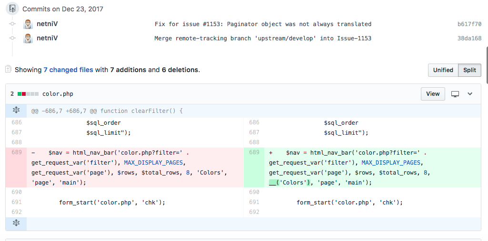

In order to create a patch for inclusion into the cacti project, you need to create a pull request which holds the changes to be made. Please note, it is better if your request also includes a change to docs/CHANGELOG with a brief description of your change (this is included with the distributed project).
The basic steps to creating a pull request are to fork cacti (by clicking on "Fork") into your own repo on GitHub. You can use just the main develop branch of your forked repo as long as all future changes can also appear in the same pull request (until it is merged). However, it is cleaner to create a separate branch from your local develop which includes the changes for the specific fix leaving the develop branch alone.
The following terms are defined here for an understanding when they are used later.
repo is a repository of files/code/images
fork is the creation of a new repo based on an existing repo
origin is the repo that you have created on GitHub
upstream is the repo that you have forked from on GitHub
branch is similar to a fork but within an existing repo contains a separate area of work * commit is a collection of changes that are stored together
git is a command that should be installed locally on the developers machine
Issue-1153 is an example branch whose name is based of the number of the issue created on GitHub
Note: During this page, any reference to Issue-1153 is the branch name that should be replaced by your own branch name.
The first time you come to use git if you try to commit, it will use your local settings to mark the commit with a username and email address. However, if these are not defined, then it will use username@machinename as the email address and username as the name. These details will be stored against the commit that you make so it is always advisably to set them. To change these, use
git config --global user.name "yourname"
git config --global user.email "email@example.com"
Fork cacti on github.com using the Fork button that appears top right of the code area.

Clone the source to your local machine, you can use one of the following two lines. The second allows you to clone into a directory of your own naming, whilst the first takes the repo's name.
git clone https://github.com/<myuser>/cacti
git clone https://github.com/<myuser>/cacti <dirname>
If you have previously cloned your repo locally, you should always ensure you are back on your own develop branch so that you are not branching from another branch (unless you really want !). The double minus at the end ensures that all files are replaced with the current branch version.
git checkout origin/develop --
Next, you should create a branch for the work you want to do and there are two ways to do this. If you want to create a new branch (I tend to call it Issue-# where # is the issue number) using command line
git checkout -b Issue-1153
git push --set-upstream origin Issue-1153
If you want to create a new branch on your forked repo on github, do so by clicking on the branch (normally Develop) on the GitHub code page, then type in the new name of a branch before hitting return. GitHub will then create and switch to that branch but your local repo will know nothing of this yet.

To checkout the newly created branch, you need to pull down the latest GitHub information using git fetch before perform the checkout. It will as follows:
git fetch
git checkout Issue-1153
At this point, you will have a local repo (which is a replica of your forked cacti repo) downloaded and available to edit with the changes you wish to make. At any time, whilst making changes or once all done, you can see the files that have changed using git status and if you want to see the actual differences then you would use git diff.
To commit any changes that you have made, you must first commit them to your local repo. This does not affect the online GitHub repo that you have forked from cacti's repo. Neither of these are touched at this time.
Add any change file to the commitment list using either git stage or git add (they are both the same command)
git stage <file>
Commit your changes to the local repo
git commit
This has now committed the changes you made to your local repo. Again, please note, this has not yet published these changes on GitHub to your forked repo.
Before you publish your local changes back to GitHub (or even afterwards), you've may have noticed changes being made to the cacti (upstream) project that are you not in your origin (forked) or local repos. If you were to commit a pull request using your local changes, there would be quite a few differences. You also wouldn't know if there was likely to be a conflict with your changes. Travis CI is now running against the cacti repo so conflicts do usually show up there if no where else.
In order to get these latest changes, we must pull from the upstream (cacti) repo and commit these to our local repo.
If you have previously added an upstream repo, you may skip this step. If not, we add the upstream using the following command.
git remote add upstream https://github.com/cacti/cacti.git
With the upstream established, we must fetch the latest upstream information so git knows what can be used.
git fetch upstream
Now, with this latest information available, we can merge any changes from the main development branch using the following command. Note that at this point, you can use an alternative branch, if you are trying to apply this to a feature branch such as 1.2.x for example.
git merge upstream/develop
Once we have merged the latest changes, there may be conflicts due to changes made by other people at the same point in a file as you have made. Any file listed as being in conflict needs to be edited by looking for the <<< and >>> points.
Edit these points (and there may be more that one set in a given file) as you will see both the original upstream version and your edited version. You must remove everything but the changes you desire including the chevron points before you exit the file leaving it in a full working state.
Once your done editing all the conflicts, you must add the file so that git knows you wish to commit this file later.
git add <file>
Finally, you can commit the changes which will default the message as below. If you wish to abort the commit, ensure that there are no non-blank lines or only lines that start with a #. Anything else will be treated as a commit message.
Merge remote-tracking branch 'upstream/develop' into Issue-1153
git commit
In order to get changes back from your local repo back to Github in your forked repo, you need to "push" the changes back up.
Push those latest merges up to github
git push
At this point, if you have not saved your GitHub credentials, these will be prompted for and you will have to manually enter.
Note: this will NOT have affected the main cacti repo at all, only your forked copy.
If you want to update to the latest develop source on the develop branch, or master on the master branch just repeat the "Update with the latest development source" against the appropriate branches instead. eg, update origin/develop with upstream/develop or origin/master with upstream/master.
Sometimes, if you have quite a lot of changes you wish to port to another branch, it's worth performing the following:
Get the commit hash number from github.com or from git log
Create a patch file of the difference by comparing the provided has with it's parent (^)
git diff -p 1c0dd0e75d8b6d234eecc63acb68280c9bae0d06^ 1c0dd0e75d8b6d234eecc63acb68280c9bae0d06 > diff.patch
This can then be applied later using
git apply diff.patch
If you are going to have many patch files, it is worth naming them using a convention that keeps them unique.
Once you have committed and published all the changes that you need to make for your issue/fix/enhancement, you will need to let the cacti group know that these changes are available. To do this, you can browse to your code and then click on pull request

This will then switch you automatically over to the cacti repo, create a pull request and fill in details as much as possible. You will then have the opportunity to edit the title and enter a description. It would be wise to put as much detail as possible, and if you referring back to a previous issue, place a link to that too.

After you have entered the details above, double check the changes that follow and make sure you have no conflicts again. It is normal to have conflicts here if you have no been updating your local repo with the changes from the upstream (cacti) repo. If not, everything will look OK.

If you are positive that you have everything in order, click Create Pull Request and this will be submitted to the cacti repo. Once the developers there have reviewed your changes they will either suggest some alterations or they will successfully commit your code in.
Once your code has been pulled in, you should see an option to safely delete the branch that you created at the bottom of the pull request. Clicking this will remove the repo from public view (though you can later revert this if you wish to).
If you do not want to keep setting the origin on the initial push in the long format, you can shorten this by using the following:
git config --global push.default current
Once that has been done, all future pushes to the origin source can be achieved using:
git push -u
Copyright (c) 2004-2024 The Cacti Group